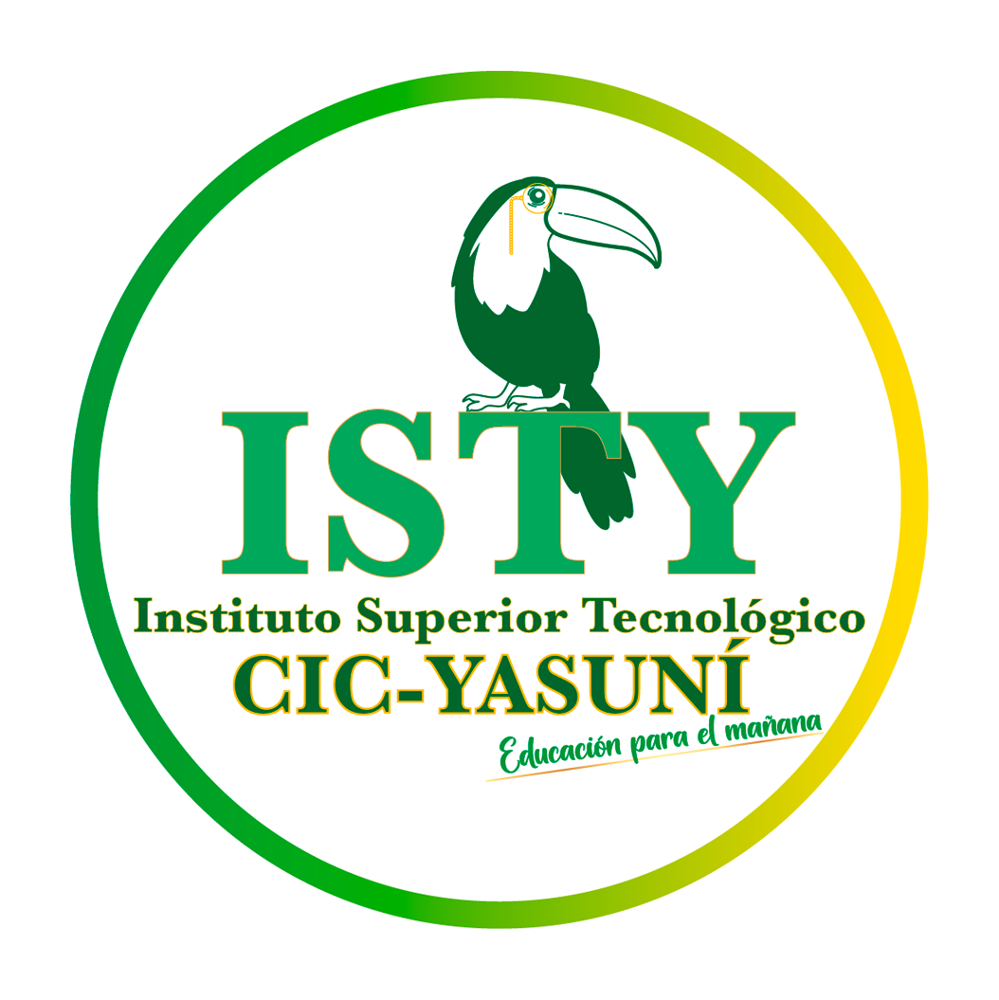
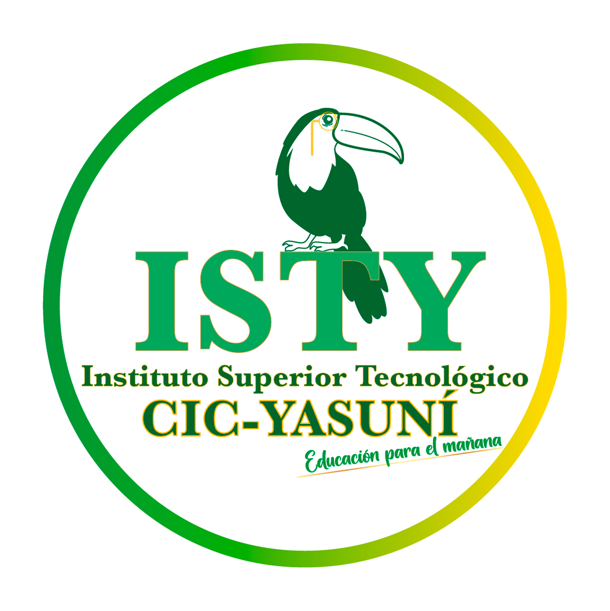

Objetivo General
El objetivo de la maestría tecnológica en Herramientas de ciberseguridad es formar profesionales altamente capacitados en el diseño, implementación y evaluación de sistemas de seguridad de la información e infraestructura, capaces de identificar y controlar los riesgos, vulnerabilidades que se presentan y promover la mitigación de los mismos en las organizaciones, con el fin de mejorar la seguridad de la información y los equipos, asegurando que los equipos e información estén en un ambiente seguro y funcionen correctamente y para de esta manera contribuir al desarrollo sostenible de las empresas y la sociedad en general
Objetivos Especficos
Proporcionar una formación integral que capacite a los estudiantes para identificar, prevenir y responder a incidentes de seguridad cibernética en diversas organizaciones y sectores.
Desarrollar un entendimiento sólido de las tecnologías, sistemas y redes que componen la infraestructura de TI, así como de las vulnerabilidades asociadas a estas.
Capacitar a los estudiantes en el uso de herramientas y tecnologías avanzadas para la evaluación de riesgos, la detección de intrusiones, la respuesta a incidentes y la mitigación de amenazas.
Enseñar a los estudiantes a realizar análisis de riesgo y a implementar políticas y prácticas efectivas de gestión de la seguridad de la información.
Proporcionar un conocimiento claro de los marcos legales, normativos y éticos relacionados con la ciberseguridad y la privacidad de los datos.
Fomentar habilidades técnicas específicas, así como habilidades críticas como el trabajo en equipo, la comunicación y la resolución de problemas, esenciales para el manejo eficaz de la ciberseguridad en un contexto organizacional.
Promover la investigación en áreas emergentes de la ciberseguridad, fomentando una mentalidad innovadora que impulse el desarrollo de nuevas soluciones y enfoques para enfrentar los problemas actuales.
Crear conciencia sobre la importancia de la ciberseguridad en el mundo actual y preparar a los graduados para ser líderes en la educación y promoción de prácticas seguras en sus respectivas organizaciones y comunidades

 
